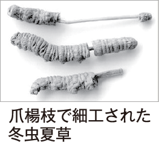

アパレルメーカーとして2018年に70周年を迎えます。繊維素材の研究開発の中で出会った独自の培養技術を応用し、冬虫夏草の量産に成功しました。ファッションだけにとどまらず、快適で活力に満ちた健やかな人生をご提案し続けています。
〒700-8562 岡山市北区昭和町 3-12


国内で培養した冬虫夏草のみを使用し、
製造も国内で行っていますのでご安心ください。
実際、素材や品質が不明な“偽物”の多くは海外から輸入されるものです。右の写真のように細工したり、貴金属をまぶして目方をごまかしたりする事例も。商品を選ぶ際は、産地や特有成分「コルジセピン」の含有量を確認してください。
- 